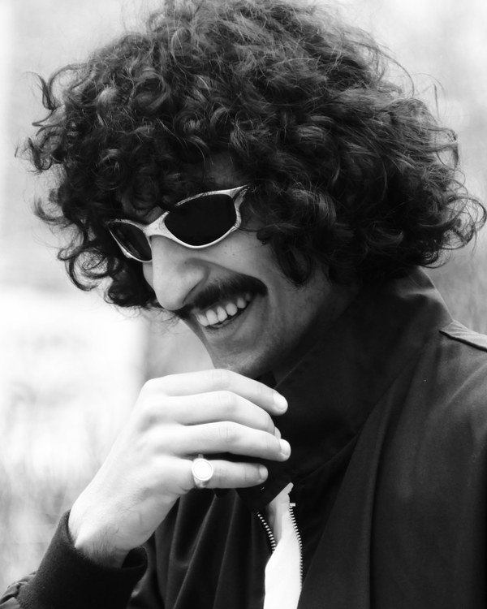

Привет, яHello, I'm
КаджикKadzhik ВарданянVardanyan
UX/UI и продуктовый дизайнерUX/UI & Product Designer
Проектирую интерфейсы для iGaming, финтеха и сервисов с большим количеством данных. Веду проект целиком: сценарии, дизайн-система, экраны для десктопа и мобильного, рабочий прототип. Каждый день использую AI-инструменты и проверяю макеты на настоящих данных.I design interfaces for iGaming, fintech and products with a lot of data. I run a project end to end: user flows, a design system, desktop and mobile screens and a working prototype. I use AI tools every day and test layouts against real data.
Figma · дизайн-системы · сложные интерфейсы · прототипы в кодеFigma · Design systems · Data-heavy UI · Coded prototypes
- 4продукта от идеи до экрановproducts, idea to screens
- 42экрана на десктопе и мобильномdesktop and mobile screens
- 4дизайн-системы на переменныхdesign systems on variables
- 1виджет на живых данныхwidget running on live data
(01) ПроектыProjects
Мои кейсыMy case studies
Казино, криптодашборд, мобильный банк и B2B-кабинет с виджетом на живых данных. В каждом кейсе — задача, решения, экраны и цифры.A casino, a crypto dashboard, a mobile bank and a B2B web app with a widget on live data. Each case covers the problem, the decisions, the screens and the numbers.


(02) ОпытExperience
ОпытExperience
-
2024–2026 ORBIT Онлайн-казино с crash-игройOnline casino with a crash game UX/UI и продуктовый дизайнерUX/UI & Product Designer
ЗадачаTask
Спроектировать iGaming-продукт целиком: бренд, лобби, игру, кошелёк и регистрацию для десктопа и мобильного.Design an iGaming product end to end: brand, lobby, game, wallet and sign-up for desktop and mobile.
Что я сделалWhat I did
Нейминг и бренд, дизайн-система на переменных Figma, четыре ключевых сценария, иллюстрации и 3D-маскот в Higgsfield, промо-креативы для пяти кампаний.Naming and brand, a design system on Figma variables, four core flows, illustrations and a 3D mascot made in Higgsfield, promo creatives for five campaigns.
РезультатOutcome
8 экранов (4 десктоп + 4 мобильных), 46 цветовых переменных, 19 компонентов, 50 иконок, 26 иллюстраций.8 screens (4 desktop + 4 mobile), 46 colour variables, 19 components, 50 icons, 26 illustrations.
Открыть кейсView caseКлючевые решенияKey decisions
- Сделал казино спокойным и «дорогим» вместо привычного шума: один главный оффер на экран, без мигающих счётчиков.Made the casino calm and premium instead of the usual noise: one main offer per screen, no blinking counters.
- Золотой цвет оставил только для денег и главной кнопки — игрок сразу видит баланс, выигрыш и действие.Kept gold only for money and the primary button, so the player instantly sees balance, winnings and the next action.
- Построил продукт вокруг пути игрока: регистрация → лобби → Orbit Crash → выигрыш → вывод.Built the product around the player journey: sign-up → lobby → Orbit Crash → win → withdrawal.
- Собрал систему до экранов: примитивы → семантические токены → компоненты, поэтому весь продукт перекрашивается в одном месте.Built the system before the screens: primitives → semantic tokens → components, so the whole product can be re-themed in one place.
-
2025–2026 Nyxa Криптодашборд, веб и мобильныйCrypto dashboard, web and mobile UX/UI и продуктовый дизайнерUX/UI & Product Designer
ЗадачаTask
Сделать дашборд крипто-инвестора, который понятен с первого взгляда, хотя данных на экране много.Make a crypto investor dashboard that reads at a glance even with a lot of data on screen.
Что я сделалWhat I did
Бренд, дизайн-система на токенах, экраны обзора, рынков, портфеля и торговли, адаптив под 390 px.Brand, a token-based design system, overview, markets, portfolio and trade screens, adapted to 390 px.
РезультатOutcome
8 экранов, 51 цветовая переменная, 17 текстовых стилей, 30+ компонентов, 48 иконок, 12 иллюстраций.8 screens, 51 colour variables, 17 text styles, 30+ components, 48 icons, 12 illustrations.
Открыть кейсView caseКлючевые решенияKey decisions
- Разобрал 8 финтех- и трейдинговых дашбордов и вывел правила: одна главная цифра на экран, понятная иерархия карточек, спокойные графики.Reviewed 8 fintech and trading dashboards and set rules: one key number per screen, a clear card hierarchy, calm charts.
- Ушёл от чистого чёрного к нейтралям с фиолетовым оттенком: экран не утомляет при вечернем использовании.Moved from pure black to violet-tinted neutrals, so the screen stays easy on the eyes in the evening.
- Заложил 29 примитивов и 22 семантических токена со скоупами и CSS-синтаксисом, чтобы разработчик брал значения прямо из Figma.Set up 29 primitives and 22 semantic tokens with scopes and CSS syntax, so a developer can take values straight from Figma.
- Собрал все экраны, включая мобильные, только из экземпляров компонентов.Assembled every screen, mobile included, from component instances only.
-
2024–2025 Vesta Мобильный банкMobile bank UX/UI и продуктовый дизайнерUX/UI & Product Designer
ЗадачаTask
Спроектировать перевод другу так, чтобы он не ломался ни в одном состоянии, и показать, как дизайн влияет на метрики.Design a send-money flow that holds up in every state, and show how the design moves product metrics.
Что я сделалWhat I did
Бренд, дизайн-система, сценарий перевода со всеми краевыми состояниями, продуктовый слой с метриками, живой прототип в HTML/CSS/JS.Brand, design system, a send-money flow with every edge state, a product layer with metrics, a live HTML/CSS/JS prototype.
РезультатOutcome
18 экранов, 7 краевых состояний, рабочий прототип, который можно открыть в браузере.18 screens, 7 edge states and a working prototype you can open in the browser.
Открыть кейсView caseКлючевые решенияKey decisions
- Выбрал самый частый и нервный сценарий банка — перевод другу — и показал комиссию, срок и итоговую сумму до подтверждения.Picked the bank's most frequent and stressful flow, sending money to a friend, and showed fee, timing and total before confirmation.
- Продумал 7 краевых состояний: сбой Face ID, нет сети, отказ банка, лимит и другие.Designed 7 edge states: Face ID failure, no network, bank decline, limits and more.
- Описал JTBD, журнал решений с отвергнутыми вариантами, гипотезы и воронку с метриками.Wrote up JTBD, a decision log with rejected options, hypotheses and a funnel with metrics.
- Сверстал прототип в HTML: переключатели включают сбои, а лог показывает события аналитики на каждом шаге.Built an HTML prototype: toggles trigger failures and a log shows the analytics events at every step.
-
2025 Arena + Arena Live B2B-кабинет и виджет на живых данныхB2B web app and a widget on live data UX/UI и продуктовый дизайнерUX/UI & Product Designer
ЗадачаTask
Собрать кабинет спортивной школы с реестром, заявками и дашбордом, а затем проверить его дизайн-систему в другом продукте на настоящих данных.Build a sports school web app with a registry, entries and a dashboard, then test its design system in another product on real data.
Что я сделалWhat I did
Реестр с фильтрами и массовыми действиями, заявка в пять шагов, дашборд, светлая и тёмная тема. Выгрузил токены из Figma в код и собрал на них беттинг-виджет на данных ESPN.A registry with filters and bulk actions, a five-step entry form, a dashboard, light and dark themes. Exported the tokens from Figma to code and built a betting widget on them using ESPN data.
РезультатOutcome
8 экранов и состояний, 17 компонентов, 36 иконок. Виджет: 43 примитива и 27 семантических токенов, 12 лиг живых данных, работает онлайн.8 screens and states, 17 components, 36 icons. Widget: 43 primitives and 27 semantic tokens, 12 leagues of live data, running online.
Открыть кейсView caseКлючевые решенияKey decisions
- Сделал дашборд из задач, а не витрины: блок «Требует внимания» показывает, что нужно сделать сегодня.Made the dashboard about tasks, not a showcase: a ‘Needs attention’ block shows what to do today.
- Каждое состояние таблицы объясняет, что случилось, и подсказывает следующий шаг; пустой поиск говорит, какой фильтр мешает.Every table state explains what happened and suggests the next step; an empty search tells you which filter is in the way.
- На телефоне таблица превращается в карточки, фильтры — в нижнюю шторку, а форма заявки — в одну колонку с закреплёнными кнопками.On mobile the table becomes cards, filters move to a bottom sheet, and the entry form becomes one column with pinned buttons.
- Вынес токены из Figma в код и проверил систему на живых матчах: длинные названия, пропавшие логотипы, движение коэффициентов, пустые лиги.Moved the tokens from Figma to code and tested the system on live matches: long names, missing logos, moving odds, empty leagues.
(03) Обо мнеAbout
Обо мнеAbout me
Я UX/UI и продуктовый дизайнер. Работаю там, где интерфейс легко сделать сложным: много данных, деньги, живые статусы, несколько ролей. Ищу самое простое решение, которое выдержит настоящие данные, краевые случаи и разработку, и продумываю каждое состояние экрана до того, как он уйдёт в код.I'm a UX/UI and product designer. I work where interfaces easily get complicated: lots of data, money, live states, several roles. I look for the simplest solution that still holds up with real data, edge cases and a development team, and I think through every state of a screen before it goes to code.
Чем я занимаюсьWhat I do
- 01
Продуктовый UXProduct & UX
Задачи пользователя и JTBD, сценарии, информационная архитектура и каждое состояние экрана: пустое, загрузка, ошибка, длинный контент.User jobs and JTBD, flows, information architecture and every state of a screen: empty, loading, error, long content.
- 02
Дизайн-системыDesign systems
Переменные Figma со светлым и тёмным режимом, токены, которые выгружаются в код, компоненты с вариантами и понятными правилами.Figma variables with light and dark modes, tokens that export to code, components with variants and clear usage rules.
- 03
Интерфейсы с даннымиData-heavy UI
Дашборды, реестры и таблицы с фильтрами, сортировкой и массовыми действиями, многошаговые формы, в которых пользователь не теряется.Dashboards, registries and tables with filters, sorting and bulk actions, multi-step forms where nobody gets lost.
- 04
Прототипы и передачаPrototypes & handoff
Кликабельные прототипы в Figma и рабочие в HTML/CSS/JS, спецификации и токены, по которым разработчик собирает без догадок.Clickable prototypes in Figma and working ones in HTML/CSS/JS, specs and tokens a developer can build from without guessing.
Как я работаюHow I work
Задача, а не картинкаThe job, not the picture
Начинаю с того, что человек пытается сделать, и с ограничений бизнеса и разработки.I start from what the person is trying to get done and from the business and engineering constraints.
Сначала системаSystem first
Экраны собираются из компонентов и токенов, поэтому продукт остаётся цельным и легко растёт.Screens are assembled from components and tokens, so the product stays consistent and grows easily.
Проверка настоящими даннымиTested on real data
Длинные имена, пустые списки, ошибки и медленная сеть — до передачи в разработку, а не после.Long names, empty lists, errors and a slow network are handled before handoff, not after.
AI как инструментAI as a tool
Ускоряю ресёрч, иллюстрации и прототипы с помощью AI, но каждое решение проверяю сам.I use AI to speed up research, illustration and prototyping, and check every decision myself.
ИнструментыToolkit
- Figma
- Variables & Tokens
- Auto Layout
- Prototyping
- FigJam
- Design systems
- User flows
- UX research
- HTML / CSS / JS
- Higgsfield AI
- GPT Image
- Kling
- Notion
ПроцессProcess
- 01
ИсследованиеResearch
Задачи пользователя, конкуренты, ограниченияUser jobs, competitors, constraints
РезультатOutputБриф, JTBD, разбор конкурентовBrief, JTBD, competitor notes
- 02
СтруктураStructure
Сценарии, роли, информационная архитектураFlows, roles, information architecture
РезультатOutputСценарии в FigJam, карта экрановFigJam flows, screen map
- 03
СистемаSystem
Токены, компоненты, правилаTokens, components, rules
РезультатOutputПеременные Figma, библиотека компонентовFigma variables, component library
- 04
ИнтерфейсInterface
Экраны, все состояния, мобильная версияScreens, every state, mobile
РезультатOutputДесктоп и мобильный, светлая и тёмная темаDesktop and mobile, light and dark
- 05
ПроверкаValidate
Прототип, настоящие данные, правкиPrototype, real data, iteration
РезультатOutputПрототип, исправления, передача в разработкуPrototype, fixes, developer handoff
(04) КонтактыContact
Давайте сделаем ваш продукт понятным.Let's make your product easy to use.
Быстрее всего отвечаю в Telegram. Открыт к новым проектам и готов выполнить тестовое задание.Telegram is the fastest way to reach me. Open to new projects and happy to do a test task.